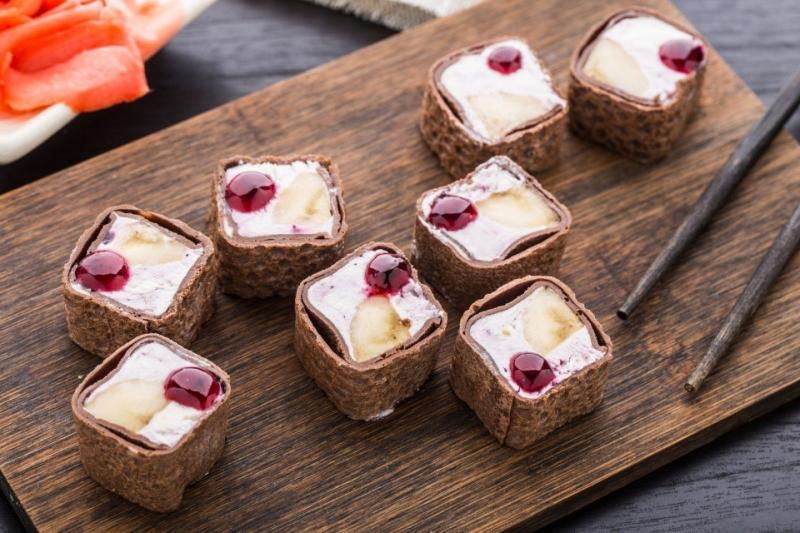

Новинки

Десертные роллы "Тирамису-суши"
Итальянская классика в японском стиле! Хрустящая основа из песочного печенья, нежный крем маскарпоне с кофейными нотками и свежие ягоды, завернутые в стиле суши. Элегантный десерт-обманка, который удивит сочетанием текстур и подачи.

Готический черный бургер
Драматичный и аппетитный: угольно-тёмные булочки с активированным углём, сочная говяжья котлета с трюфельным акцентом, копченый сыр и грибы в чёрном соусе. Брутальная эстетика, но узнаваемый вкус любимого бургера.